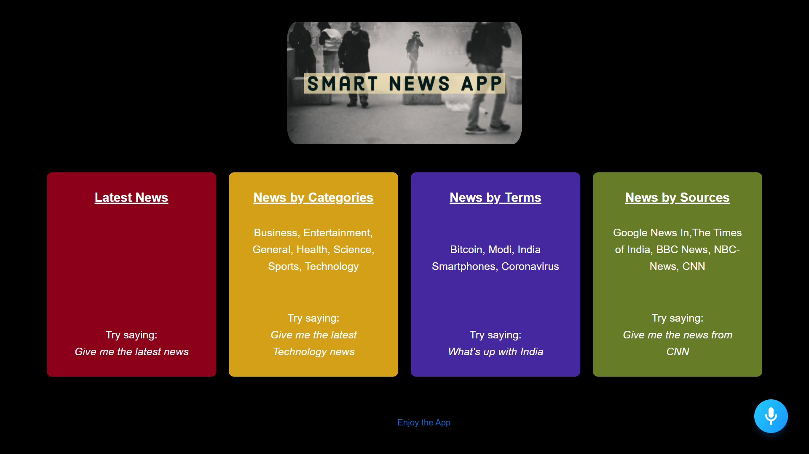

My Name is Rituraj Kushwaha
I'm a 4th year computer science UG student at International
Institute of Information Technology, Naya Raipur.
My fields of interest lie in software development, data science
and Artificial Intelligence.


With large number of classifiers available in machine learning, it
is often a tedious task for practioners to change values and
statements in code in order to compare results of different
classifiers. With the help of this web app one can change
hyperparameters of different classifiers and compare their
results.

Companies often interact with their customers on Twitter through
their feedback, so it is important that they analyze sentiment of
their customors based on region, based on keywords of sentiment
and their distribution. This web app helps by providing dashboard
of sentiment analysis.
With growing number of OTT platflorms and original contents, movie
lovers often face the problems of overchoice. This webpage will
help them to decide by showing trending movies and webseries on
various famous platforms.

With the availibility of overwhelming news website on various
content, users often face difficulty in searching news from one
website to another. This Smart News web app provides the user to
search news of their choice through their voice interaction.
Style transfer is a computer vision technique that allows us to
recompose the content of an image in the style of another. If
you’ve ever imagined what a photo might look like if it were
painted by a famous artist, then style transfer is the technique
that turns this into a reality.
The traditional Healthcare record management systems had been very
less efficient and less secure while using Blockchain technology
to store Health record of the patient will ensure transparency,
trust and data integrity.